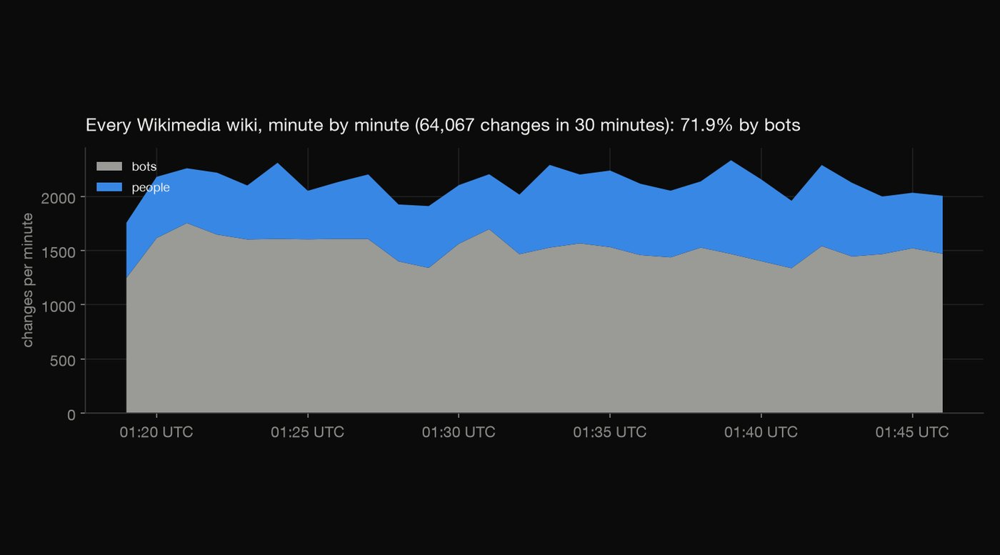
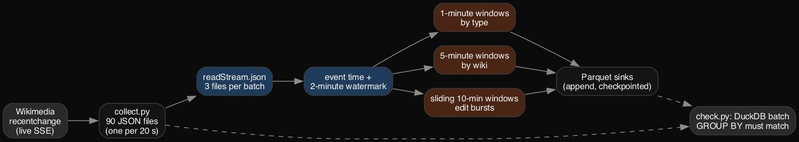
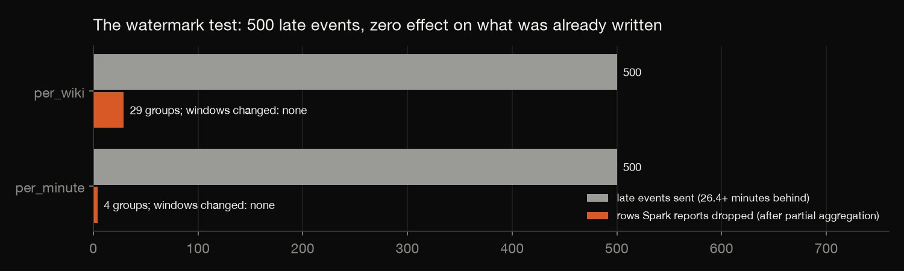
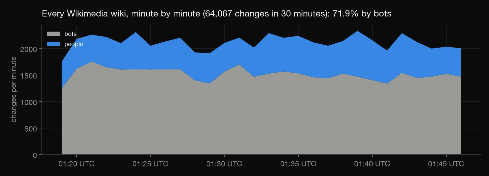
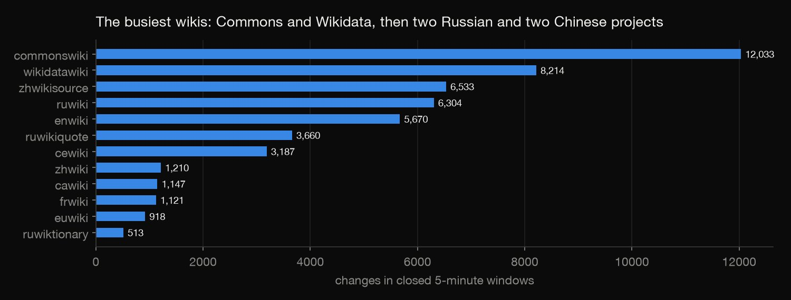

Apache Spark · Streaming · 2026-10
Live Wikipedia Edits in Spark Streaming
Thirty minutes of every edit on every Wikimedia wiki, processed with Spark Structured Streaming: event time, watermarks, windowed aggregations and checkpointed Parquet sinks, proven right by a batch recomputation and a deliberate late-data test.

A replay of a 30-minute recording, not a 24/7 deployment: no Kafka and no cluster. User names were dropped when the stream was recorded.
01 — The problem
Wikimedia publishes every change to every one of its wikis as a live stream, about 35 events a second. Real-time pipelines like this have to answer questions continuously, as data arrives, and they get two things wrong easily: they count events in the wrong window, and they don't know what to do with events that arrive late.
Who is editing right now, and can a streaming job prove its answers are the same ones a careful batch query would give?
02 — What I built
A Structured Streaming pipeline over 64,067 changes on 145 wikis (recorded 01:19–01:49 UTC, 2 October 2026):
- A recorder that writes the live stream to a new file every 20 seconds, as a message queue would hand it on.
- Three streaming queries on event time with a 2-minute watermark: 1-minute windows by change type, 5-minute windows by wiki, and sliding 10-minute windows for edit bursts.
- Checkpointed Parquet sinks in append mode, replayed with
trigger(availableNow). - Two proofs: a batch recomputation, and a late-data experiment.
03 — How it was built
- 01
Record the stream like a queue would
The recorder reads Wikimedia's Server-Sent Events and writes a new file every 20 seconds: 90 files in 30 minutes. Each file is written under a temporary name and then renamed, so Spark never picks up half a file. User names are dropped on the way in; distinct editors are counted from a short hash.
tmp = LAND / f".part-{part:05d}.json" # write then rename: a reader never sees half a file - 02
Stream on event time, with a watermark
Spark reads three files per micro-batch and windows events by when they happened, not by when they arrived. The 2-minute watermark tells Spark how long to wait for stragglers. In append mode each window is written once, after the watermark passes its end. The whole recording replays in 31 micro-batches in about 17 seconds.

.withWatermark("event_time", WATERMARK)) - 03
Prove batch equals stream
check.pyrecomputes every window Spark wrote with one DuckDB batch query over the same files. All 112 per-minute and 465 per-wiki windows match exactly, and every window that had closed was written. Distinct editors in the burst query come from a HyperLogLog sketch, so they are compared with the exact count to within 10%.assert sum(dropped.values()) == 0 and (j["changes_batch"] == j["changes"]).all(), dropped - 04
Stress the watermark on purpose
This stream arrived in order: no event was ever behind the newest one already delivered, so the watermark never had to act. So the test sends 500 events from early in the recording, at least 26.4 minutes late, as a lagging source would. Every window already written stays identical.
Spark reports only 4 and 29 dropped rows, not 500. Its counter counts rows after partial aggregation, so the late events had already been folded into 4 (minute, type) and 29 (5-minute, wiki) groups. The test checks that exactly.

assert r["rows_dropped_by_watermark"] == r["partial_groups_in_late_rows"] and r["written_windows_identical"], r
04 — Results
- Bots: 71.9% of all changes, and 98–100% on Russian Wikipedia, Russian Wikiquote, Chinese Wikisource and Chechen Wikipedia.
- The mix: 24,763 edits, 1,655 new pages, 25,823 category changes and 11,826 log events, on 145 wikis.
- Busiest: Wikimedia Commons and Wikidata.
- Anonymous editors: 1.4% of changes came from anonymous or temporary accounts.
- Edit wars are rare: in 30 minutes one page met the burst rule. The busiest pages were one person saving again and again.


05 — What I'd do next
- Run it continuously against the live stream, with Kafka between the recorder and Spark.
- Use a longer watermark and update mode for sources that do arrive late, and compare.
- Detect bursts over a full day, where edit wars actually appear.